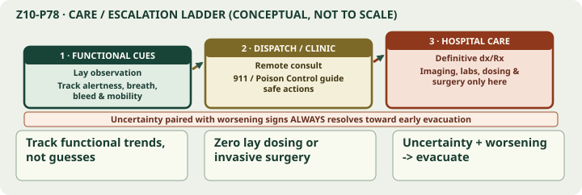

Z10-P78 · Wilderness medicine · New manuscript
Respect remote-setting clinical boundaries: diagnosis, dosing, and invasive care
Maintain disciplined humility about what lay wilderness care can and cannot determine without diagnostics, labs, or clinical licensure.
When it applies · Every backcountry medical decision across injury, illness, exposure, and evacuation planning.
Equipment · Written patient log, communication plan, and pre-agreed conservative evacuation rules.

Actions
- Recognize that lay field exams cannot diagnose internal bleeding, hairline fractures, concussions vs brain bleeds, appendicitis, or cardiac events—use functional red flags (alertness, breathing, bleeding, mobility, trend direction) to drive evacuation decisions instead of guessing diagnoses.[M20, M10, M11]
- Do NOT prescribe or calculate medication dosages for companions, administer another person's prescription drugs, or perform invasive field procedures (cutting wounds, lancing deep abscesses, field suturing, or airway incisions).[M20, M08, M13]
- Remember that wilderness first-aid reference cards support memory AFTER hands-on certified training—they NEVER substitute for formal CPR, Stop the Bleed, WFA/WFR courses, or live 911/clinical medical direction.[M03, M01, M20]
Failure recognition · Acting as an amateur physician in camp—guessing a "harmless stomach virus" and withholding evacuation until an appendix ruptures or shock sets in.[M20, M05]
Verify · Confirm decisions rest on objective functional trends and red flags rather than speculative field diagnoses.[M20, ED]
Stop or change course · Uncertainty paired with worsening pain, fever, abnormal breathing, or declining alertness ALWAYS resolves in favor of evacuation and clinical evaluation.[T02, M20]
Evidence and editorial notes
- M01 · American College of Surgeons · STOP THE BLEED Training Course (current web edition)
- Section: Ensure Your Own Safety; Find Life-Threatening Bleeding; Compress · Conditions: Lay responder encountering severe external hemorrhage
Support: Ensure scene safety first, call 911, expose the wound to locate life-threatening bleeding, and apply firm continuous direct pressure with clean gauze or cloth.
Limitations: Does not replace formal hands-on Stop the Bleed training or EMS trauma care. · Conflicting evidence: None across ACS/ARC guidelines.
Editorial note: Separates life-threatening arterial/venous hemorrhage from minor scrapes. · Specialist reviewer: Wilderness medicine and trauma EMS
Primary source · checked 2026-11-24 - M03 · American Red Cross · CPR Steps and Emergency Response (current web edition)
- Section: Check, Call, Care; Unresponsive Person Without Normal Breathing · Conditions: Unresponsive person not breathing normally; lay responder with EMS activation
Support: Verify scene safety, check responsiveness and normal breathing, call 911 and retrieve an AED if available, and begin dispatcher-guided or trained CPR.
Limitations: Lay text reference cannot substitute for hands-on certified CPR/AED training. · Conflicting evidence: None; aligns with AHA/ARC bystander guidance.
Editorial note: Distinguishes lay activation and dispatcher-guided CPR from advanced life support. · Specialist reviewer: EMS and resuscitation specialist
Primary source · checked 2026-11-24 - M05 · NIH / MedlinePlus · Shock (current web edition)
- Section: Recognizing Circulatory Shock and Positioning · Conditions: Injured or ill patient with pale cool clammy skin, rapid weak pulse, confusion, or dizziness
Support: Treat suspected shock as a life-threatening emergency: call 911, control external bleeding, keep the person warm and insulated from cold ground, and do not give food or drink.
Limitations: Field responders cannot diagnose internal hemorrhage or administer IV fluids. · Conflicting evidence: None; reinforces keeping suspected shock patients NPO and warm.
Editorial note: Core shock recognition and stabilization boundary in Z10. · Specialist reviewer: Emergency and wilderness medicine
Primary source · checked 2026-11-24 - M08 · NIH / MedlinePlus · Anaphylaxis (current web edition)
- Section: Recognizing Anaphylaxis and Prescribed Epinephrine Use · Conditions: Sudden severe allergic reaction (hives, facial/airway swelling, wheezing, dizziness, vomiting)
Support: Call 911 immediately for suspected anaphylaxis and assist the patient in using their own prescribed epinephrine auto-injector per its label; symptoms can rebound requiring hospital observation.
Limitations: Lay responders never prescribe or supply unprescribed epinephrine or substitute antihistamines for emergency activation. · Conflicting evidence: None; aligns with AAAAI/MedlinePlus guidance.
Editorial note: Separates assisting with a patient's prescribed auto-injector from lay prescribing. · Specialist reviewer: Allergy/immunology and EMS
Primary source · checked 2026-11-24 - M10 · NIH / MedlinePlus · Sprains and Strains (current web edition)
- Section: Soft-Tissue Sprain/Strain Care and Mobility Decisions · Conditions: Ankle, knee, or wrist sprains without deformity or open wound
Support: Rest the joint, support with comfortable stabilization, protect from further load, and evaluate whether the patient can safely self-evacuate or requires extraction; persistent inability to bear weight warrants clinical imaging.
Limitations: Severe sprains and undisplaced fractures cannot be reliably distinguished without X-ray. · Conflicting evidence: None; treats field assessment as functional evacuation triage, not diagnosis.
Editorial note: Prevents walking on unstable fractures under the assumption of a mild sprain. · Specialist reviewer: Sports and wilderness medicine
Primary source · checked 2026-11-24 - M11 · NIH / MedlinePlus · Head Injuries (current web edition)
- Section: Head Injury, Concussion Signs, and Spinal Precautions · Conditions: Falls, struck-by-branch trauma, or head impact with confusion, vomiting, worsening headache, or neck pain
Support: Assume possible head or spinal injury after significant impact; keep the head and neck still, monitor level of responsiveness, call EMS for red flags (loss of consciousness, repeated vomiting, unequal pupils, confusion, neck pain), and never resume hazardous travel.
Limitations: Delayed intracranial bleeding can worsen hours after an initially mild-seeming impact. · Conflicting evidence: None; mandates conservative evacuation for any neurologic red flag.
Editorial note: Grounds head-trauma, concussion, and spinal-motion-restriction cards. · Specialist reviewer: Neurotrauma and wilderness EMS
Primary source · checked 2026-11-24 - M13 · NIH / MedlinePlus · Spider and Arthropod Bites (current web edition)
- Section: Venomous Snake and Arthropod Bite Boundaries · Conditions: Suspected venomous snakebite or severe spider/scorpion sting
Support: Keep the person calm and still, remove rings/tight items near the bite, position calmly per dispatcher guidance, and transport promptly to emergency care; never cut the wound, suck venom, apply ice, or use a tourniquet.
Limitations: Antivenom is a hospital clinical intervention; species visual memory should never delay evacuation or risk a second bite. · Conflicting evidence: Refutes legacy cut-and-suck and constricting-band folklore.
Editorial note: Hard-stop non-invasive snakebite and venomous-bite protocol. · Specialist reviewer: Medical toxicology and wilderness medicine
Primary source · checked 2026-11-24 - M20 · NIH / MedlinePlus · First Aid Overview (current web edition)
- Section: Lay First-Aid Scope, Kit Readiness, and Documentation · Conditions: Pre-trip kit preparation and remote patient monitoring
Support: Maintain an inspected, unexpired first-aid kit matched to your actual training, keep written patient observations (time, responsiveness, breathing, symptoms, interventions) for EMS handoff, and practice skills in certified courses.
Limitations: Carrying advanced medical instruments without clinical training adds risk rather than capability. · Conflicting evidence: None; aligns with ARC and NPS-K.
Editorial note: Anchors kit sizing, SOAP-style lay observation logs, and scope-of-practice cards. · Specialist reviewer: Wilderness EMS and clinical education
Primary source · checked 2026-11-24 - T02 · American Red Cross · First Aid Steps (current web edition)
- Section: First Aid Steps > Call 9-1-1 · Conditions: Lay emergency response to unresponsiveness, abnormal breathing or severe bleeding
Support: Activate EMS and get needed equipment. Follow dispatcher directions and act within training.
Limitations: Remote locations may delay EMS arrival, requiring sustained stabilization after activation. · Conflicting evidence: None; aligns with NPS-E.
Editorial note: Mandates early emergency activation and dispatcher adherence. · Specialist reviewer: EMS and wilderness medicine
Primary source · checked 2026-11-24
Source lineage · NIH MedlinePlus First Aid and American Red Cross; new manuscript · Classification · New manuscript.